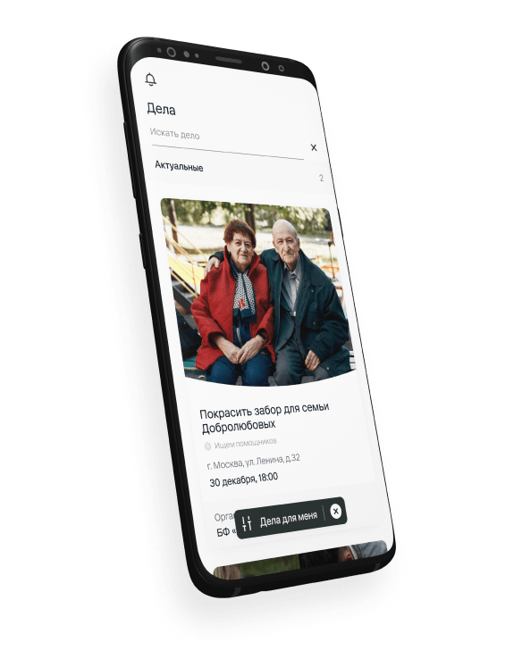
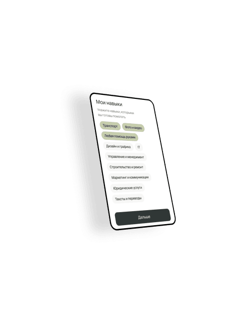
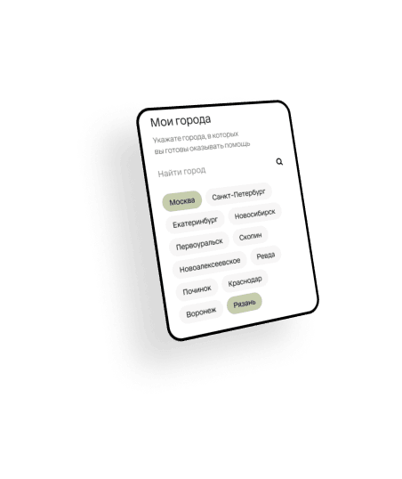

<section class="tasks">
  <div class="wrapper">
    <div class="tasks-wrapper">
      <div class="tasks-phone-thumb">
        
        <div class="tasks-phone-decorations">
          
          
          
        </div>
      </div>
      <div class="tasks-info">
        <h2 data-aos="fade-up" data-aos-duration="800" class="tasks-title">
          Задача
        </h2>
        <p data-aos="fade-up" data-aos-duration="800" class="tasks-text">
          Обновить и расширить функционал приложения для удобной и прозрачной
          помощи подопечным благотворительного фонда.
        </p>
      </div>
    </div>
  </div>
</section>
